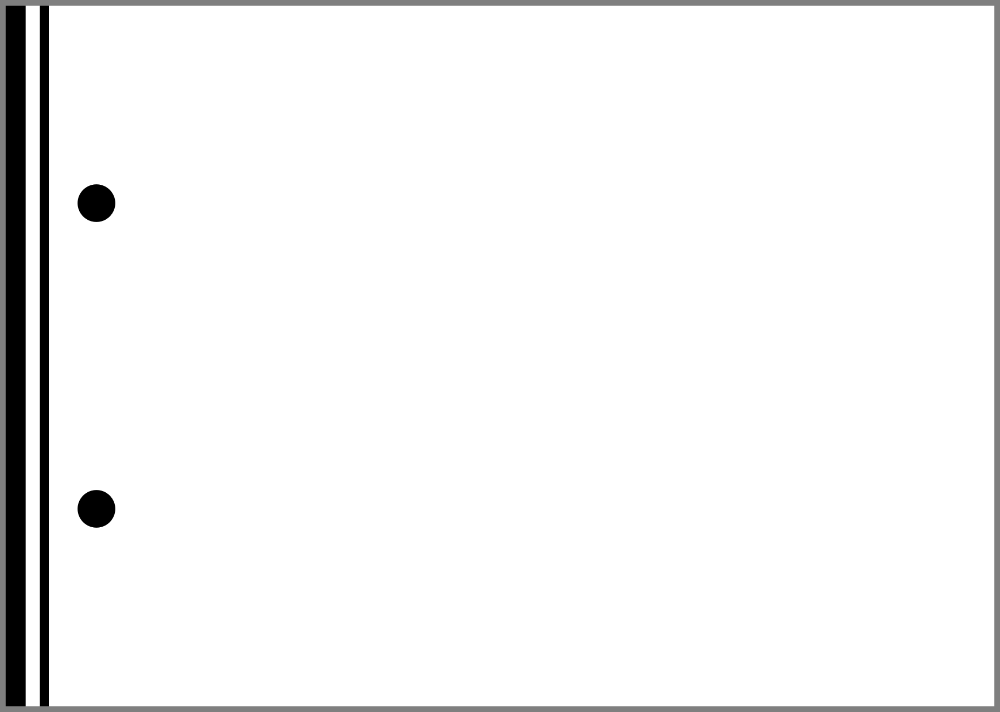
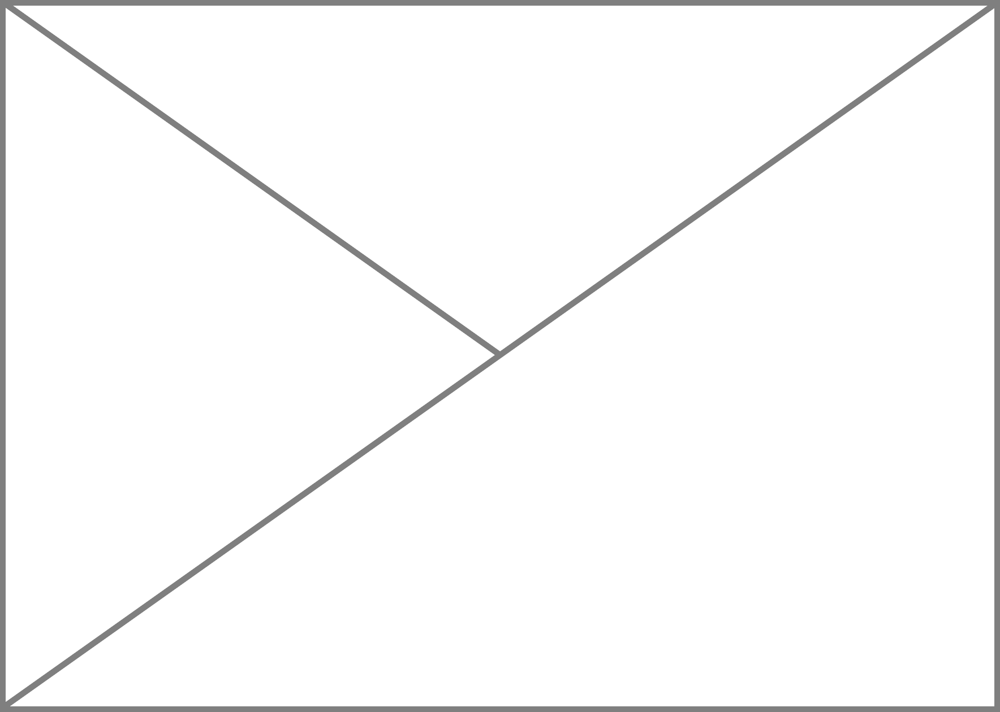
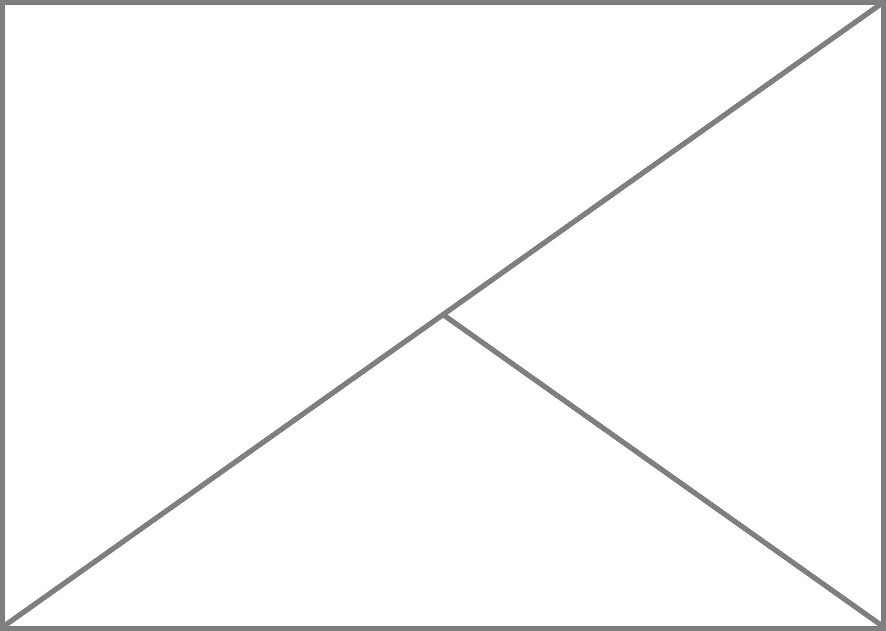
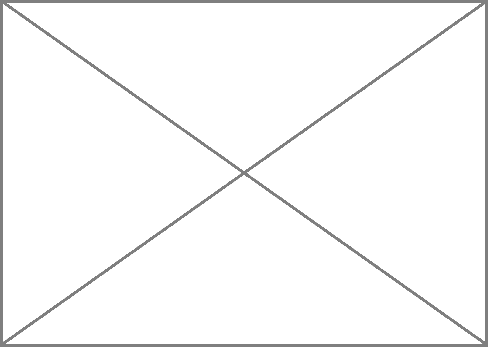

CHORD CHART
Tutoriel
Application en ligne
par Yann Ics
2015 – 2025
Chord Chart est une application en ligne dans le cadre du logiciel libre proposant une possibilité de réaliser des grilles d'accords concises et de façon intuitive, répondant ainsi à un besoin que la plupart des logiciels de gravure musicale ne développaient pas ou trop peu*. Le principe est de coder selon une syntaxe spécifique qui est exposée ici et qui peut être modulée dans certains cas avec du code HTML.
À toutes fins utiles, le code source est disponible sur le gestionnaire GitHub.
* Depuis le 26 Juin 2022, la version 2.23.10 et ultérieure de Lilypond prend en compte les grilles harmoniques – plus d'infos sur le site de Vincent : myrealbook.vintherine.org
Syntaxe [↑]
Le principe repose sur la création d'un tableau HTML avec pour taille des cellules – par défaut – le width et le height du formulaire. La hauteur ne concerne que les cases de la grille et s'adapte dans les autres cas en fonction du contenu.Les grilles d'accords [↑]
⤍ La première ligne est dédiée à l'indication de mesure (code tableau 1) et au tempo (code tableau 2).
Tableau 1: indication de mesure.
| \44 | \44d | ||
| \22 | \22d | ||
| \34 | \68 | ||
| \32 | \64 | ||
| \24 | \18 | ||
| \128 | \38 |
Tableau 2: indication de tempo (exemple pour un tempo de 60 à la noire, coder "tempo=4,=60").
| 1 | 1d | ||
| 2 | 2d | ||
| 4 | 4d | ||
| 8 | 8d |
⤍ Chaque mesure – ou temps – compris dans une case est délimitée par une paire de "|" avec un premier argument renvoyant au type de case désiré (voir tableau 3).
Tableau 3: dénominations des cases.
| \a | \la |  | \fa | \ra | |||
| \b | \lb | \fb | \rb | ||||
| \c |  | \lc | \fc | \rc | |||
| \d |  | \ld | \fd | \rd | |||
| \e |  | \le | \fe | \re | |||
| \f | \lf | \ff | \rf | ||||
| \g | \lg | \fg | \rg | ||||
| \cl | \cr | \ct | \cb |
⤍ Les lignes de reprise alternatives numérotées sont codées de la façon suivante: "rep=1@" pour la première reprise et "rep=2@" pour la deuxième reprise.
⤍ Il est possible d'utiliser la syntaxe HTML (comme "<sup></sup>" pour exposant et "<sub></sub>" pour indice), notamment pour qualifier certains accords.
⤍ Pour ajuster les accords dans les cases, utiliser le symbol "_" – qui est l'équivalent de l'entité HTML " ".
⤍ Chaque ligne est délimitée par un retour à la ligne.
⤍ Pour annoter les cases, écrire le code au-dessus ou au-dessous de la case suivant la syntaxe suivante:
"|!" début de l'annotation (pour une police de type monospace de taille fixe utiliser "|?");
"2>" nombre de cases à fusionner (correspondant dans ce cas à l'attribut HTML "colspan=2");
⤍ Le texte à insérer (possibilité d'utiliser la syntaxe HTML);
⤍ Il est possible d'insérer des lignes de type crescendo (exemple "cres=100px") et decrescendo (exemple "dim=200px") dont la longueur est exprimée en nombre de pixels;
"+" délimitation des cases;
"!|" fin de l'annotation.
⤍ Il est possible d'insérer un symbole séparateur de section en codant sur une ligne "|//|".
Tableau 4: correspondance des symboles musicaux (class="Chord4tab").
| 1 | 1 | 2 | 2 | 3 | 3 | ||
| 4 | 4 | 5 | 5 | 6 | 6 | ||
| 7 | 7 | 8 | 8 | 9 | 9 | ||
| w | w | A | A | s | s | ||
| W | W | B | B | t | t | ||
| # | # | C | C | U | U | ||
| X | X | D | D | z | z | ||
| n | n | E | E | y | y | ||
| v | v | F | F | Z | Z | ||
| o | o | G | G | Y | Y | ||
| % | % | a | a | u | u | ||
| p | p | b | b | P | P | ||
| h | h | c | c | H | H | ||
| i | i | d | d | I | I | ||
| j | j | e | e | J | J | ||
| k | k | f | f | K | K | ||
| l | l | g | g | L | L | ||
| O | O | Q | Q | S | S |
Les diagrammes d'accords (pour guitare) [↑]
⤍ Le diagramme est définit par un système de coordonnées et de mots clefs à l'intérieur d'un champ délimité par des accolades.
⤍ Le système de coordonnées indique la position des points – position-sur-le-manche+numéro-de-la-corde – ou la position d'un barré – I+nombre-de-cordes-barrées+position-sur-le-manche – selon le schéma ci-dessous.
1 2 3 4 5 6
+---+---+---+---+---+
| | | | | |
A | | | | | | A
| | | | | |
+---+---+---+---+---+
| | | | | |
B | | | | | | B
| | | | | |
+---+---+---+---+---+
| | | | | |
C | | | | | | C
| | | | | |
+---+---+---+---+---+
| | | | | |
D | | | | | | D
| | | | | |
+---+---+---+---+---+
1 2 3 4 5 6
⤍ Les mots clefs définissent une des particularités suivantes:
⤍ la position de l'accord sur le manche peut être précisé en ajoutant entre parenthèses le numéro de la frette sur le manche suivi de la position dans le diagramme;
⤍ les cordes à vides sont définit par O+numéro-de-la-corde (la position d'un éventuel capodastre peut être définit par le numéro de la frette sur le manche entre crochet);
⤍ les cordes non jouées sont définit par X+numéro-de-la-corde;
⤍ LS = position « paysage » (la position « portrait » est définit par défaut).
⤍ Le nom de l'accord peut être ajouté en tapant ":" après les accolades suivi de la dénomination de l'accord selon les symboles définit au tableau 4 (à l'exception du symbole de séparation "/" qui doit être remplacer par ",").
Attention, le nom de l'accord du diagramme ne supporte pas la syntaxe HTML.
Note : pour nommer les accords de guitare à partir de la position des doigts sur le manche, j'ai relevé deux sites proposant de le faire en ligne: zikinf.com et boiteachansons.net.
Diwar Les Coet [↑]
Illustration des possibilités qu'offrent l'application Chord Chart sur l'une de mes compositions.Résultat

Codage
-✂---------------
\24 tempo=2, ca 63
|! 1> !|
|\la Gm||\a %||\a Ew||\a Gm||\a Ew||\a D||\a Ew rep=1@||\ra D|
|\cl ||\x ||\x ||\x ||\x ||\x ||\a D rep=2@||\a Gm|
|\la D||\a %||\a Gm||\ra %|
|\a Ew||\a %||\a Gm||\a %||\a Ew||\a D||\a Gm||\fa %|
|! 1> _ !|
|//|
|? 4>_VAR. 1!|
|! 1> {LS (3 B) I6B D2 D3}:Gm + 1> {LS (6 B) I6B X1 I4D}:Ew + 1> {LS (5 B) I6B X1 I4D}:D + 1> {LS (3 B) I6B X1 D3 D4 C5}:Cm + 1> {LS (9 C) X1 X6 C2 D3 B4 D5}:F#Y7 + 1> {LS (3 C) X1 C2 D3 B4 D5}:CY7 + 1> {LS (5 D) X1 D2 D3 B4 D5}:Gm6 + 1> {LS (10 B) B1 X2 B3 C4 C5 X6}:D7#5 !|
|! 1> _ !|
|\la Gm||\a %||\a Ew||\a Gm||\a Ew||\a D||\a Cm rep=1@||\ra D|
|\cl ||\x ||\x ||\x ||\x ||\x ||\a F#Y7 rep=2@||\a Gm|
|! 2> __tremolo + 2> __sim. !|
|\la CY7||\a %||\a Gm6||\ra %|
|! 2> __cres=75px _dim=75px + 2> __cres=75px _dim=75px !|
|! 1> !|
|\a Ew||\a %||\a Gm||\a %||\a Ew||\a D7#5||\a Gm||\fa h|
|! 1> _ !|
|//|
|? 4>_VAR. 2!|
|! 1> {LS (3 B) B1 D2 D3 X4 X5 X6}:G(m) + 1> {LS (3 A) X6 X5 X4 A1 D2 C3}:Ew,g + 1> {LS (5 C) C1 D2 B3 X4 X5 X6}:AY + 1> {LS (5 C) C1 C2 B3 X4 X5 X6}:D,a + 1> {LS (5 D) D1 B2 C3 X4 X5 X6}:AY + 1> {LS (6 C) C1 B2 B3 X4 X5 X6}:Gm,bw + 1> {LS (6 B) X1 X6 I6B I4D}:Ew + 1> {LS (3 B) I6B D2 D3}:Gm !|
|! 1> _ !|
|\la G(m)||\a %||\a Ew/g||\a %||\a %||\a AY||\a % rep=1@||\ra D/a|
|\cl ||\x ||\x ||\x ||\x ||\x ||\a AY rep=2@||\a h|
|\la AY||\a %||\a Gm/bw||\ra %|
|\a Ew||\a h||\a Gm||\a h||\a Gm/bw||\a %||\a %||\fa %|
|! 4> + 4> __p cres=295px fff !|
|! 1> _ !|
|//|
|? 4>_VAR. 3!|
|! 4> _Capodastre 5e case !|
|! 1> {X1 LS X2 O3 (7 B) [5] B4 C5 A6}:Gm + 1> {LS (7 B) X1 X2 O3 [5] C4 C5 O6}:Ew(7)w5 + 1> {LS (7 B) [5] X1 O2 I4B}:D(6) + 1> {LS (7 B) [5] X1 X2 O3 O4 C5 C6}:Cm + 1> {LS (7 B) [5] X1 O2 B3 C4 B5 C6}:AY7,d + 1> {LS (12 D) [5] X1 O2 D3 D4 C5 B6}:Gm + 1> {LS (12 D) [5] X1 X2 O3 D4 C5 C6}:Ew + 1> {LS (12 D) [5] X1 X2 O3 D4 C5 B6}:Gm !|
|! 1> _ !|
|\la Gm||\a %||\a Ew(7)w5||\a Gm||\a Ew(7)w5||\a D(6)||\a Cm rep=1@||\ra D(6)|
|\cl ||\x ||\x ||\x ||\x ||\x ||\a D(6) rep=2@||\a Gm|
|\la AY7/d||\a %||\a Gm||\ra %|
|\a Ew||\a %||\a Gm||\a %||\a Ew(7)w5||\a D(6)||\a Gm||\fa %|
|! 1> _ !|
|//|
|? 4>_VAR. 4!|
|! 4> _Capodastre 3e case !|
|! 1> {LS (5 B) [3] O1 B2 B3 O4 O5 O6}:Gm + 1> {LS (7 C) [3] O1 B2 D3 D4 O5 O6}:Ew7M,g + 1> {LS (5 B) [3] B2 D3 D4 O5 O6}:Ds4 + 1> {LS (5 B) [3] X1 O2 B3 B4 O5 O6}:Cs2 + 1> {LS (7 B) [3] C1 D2 B3 B4 O5 O6}:D7U11 + 1> {LS (5 B) [3] C2 D3 D4 O5 O6}:Am7w5 + 1> {LS (5 B) [3] B1 B2 D3 D4 O5 O6}:Ds4,a + 1> {LS (12 D) [3] O1 D2 D3 C4 O5 O6}:D,g !|
|! 1> _ !|
|\la Gm||\a %||\a Ew7M/g||\a Gm||\a Ew7M/g||\a Ds4 rep=1@||\a Cs2||\ra D7U11|
|\cl ||\x ||\x ||\x ||\x ||\a Am7w5 rep=2@||\a Ds4/a||\a Gm|
|\la D/g||\a %||\a G(m)||\ra %|
|\a Ew7M/g||\a %||\a G(m)||\a %||\a Ew7M/g||\a Gm/d5||\a Gm||\fa G(m)|
|! 2> _ + 1> {LS (12 D) [3] O1 B2 D3 D4 O5 O6}:G(m) + 2> _ + 1> {LS (12 D) [3] B1 D2 D3 O4 O5 O6}:Gm,d5 !|
-✂---------------
Liste d'accords [↑]
Cette liste d'accords a été réalisé sur l'initiative de Vincent Gay. Il est à noter que la dénomination est de l'ordre du conventionnelle et peut varier suivant les habitudes de chacun (par exemple ∆ versus M7, ø versus m7b5, ° versus dim, etc...).Les triades
-✂---------------
|! 1> + 4> __Les plus courantes !|
|\x ||\a C ||\a Cm ||\a C° ||\a C<sup>s4</sup> |
|! 1> Nom + 1> <center>Do</center> + 1> <center>Do mineur</center> + 1> <center>Do diminué</center> + 1> <center>Do sus4</center> !|
|? 1> Notes + 1> <center>C E G</center> + 1> <center>C Eb G </center> + 1> <center>C Eb Gb</center> + 1> <center>C F G</center> !|
|? 1> ChordChart + 1> <center>C</center> + 1> <center>Cm</center> + 1> <center>C°</center> + 1> <center>C<sup\>s4\</sup\></center> !|
|! 1> _ !|
|! 1> + 1> __Autres... !|
|\x ||\a C+||\a C<sup>w5</sup>||\a Cm+||\a C<sup>s2</sup> |
|! 1> Nom + 1> <center>Do augmenté</center> + 1> <center>Do 5<sup>b</sup></center> + 1> <center>Do mineur aug.</center> + 1> <center>Do sus2</center> !|
|? 1> Notes + 1> <center>C E G#</center> + 1> <center>C E Gb </center> + 1> <center>C Eb G#</center> + 1> <center>C D G</center> !|
|? 1> ChordChart + 1> <center>C+</center> + 1> <center>C<sup\>w5\</sup\></center> + 1> <center>Cm+</center> + 1> <center>C<sup\>s2\</sup\></center> !|
-✂---------------
Les accords majeur sixième
-✂---------------
|\x ||\a C6 ||\a C6<sup>9</sup> |
|! 1> Nom||! 1> <center>Do 6</center> + 1> <center>Do 6/9</center> !|
|? 1> Notes + 1> <center>C E G A</center> + 1> <center>C E G A D </center> !|
|? 1> ChordChart + 1> <center>C6</center> + 1> <center>C6<sup\>9\</sup\></center> !|
-✂---------------
Les accords majeur septième
-✂---------------
|! 1> + 4> __Les plus courants</ br> !|
|\x ||\a Cv ||\a Cv<sup>9</sup> ||\a Cv<sup>#11</sup> ||\a Cv<sup>13</sup> |
|! 1> Nom + 1> <center>Do majeur 7</center> + 1> <center>Do majeur 9</center> + 1> <center>Do majeur #11</center> + 1> <center>Do majeur 13</center> !|
|? 1> Notes + 1> <center>C E G B</center> + 1> <center>C E G B D</center> + 1> <center>C E G B D F#</center> ||? 1> <center>C E G B D A</center> !|
|? 1> ChordChart + 1> <center>Cv</center> + 1> <center>Cv<sup\>9\</sup\></center> + 1> <center>Cv<sup\>#11\</sup\></center> + 1> <center>Cv<sup\>13\</sup\></center> !|
-✂---------------
Les accords septième de dominante
-✂---------------
|! 1> + 4> __Les plus courants !|
|\x ||\a C7 ||\a C9 ||\a C7<sup>w9</sup> ||\a C7<sup>s4</sup> |
|! 1> Nom + 1> <center>Do 7</center> + 1> <center>Do 9</center> + 1> <center>Do 7 b9</center> + 1> <center>Do 7 sus4</center> !|
|? 1> Notes + 1> <center>C E G Bb</center> + 1> <center>C E G Bb D</center> + 1> <center>C E G Bb Db</center> + 1> <center>C F G Bb</center> !|
|? 1> ChordChart + 1> <center>C7</center> + 1> <center>C9</center> + 1> <center>C7<sup\>w9\</sup\></center> + 1> <center>C7<sup\>s4\</sup\></center> !|
|! 1> _ !|
|! 1> + 4> __Quelques autres !|
|\x ||\a C7<sup>#9</sup> ||\a C7<sup>#11</sup> ||\a C7<sup>w13</sup> ||\a C7<sup>#9w13</sup> |
|! 1> Nom + 1> <center>Do 7 #9</center> + 1> <center>Do 7 #11</center> + 1> <center>Do 7 b13</center> + 1> <center>Do 7 #9b13</center> !|
|? 1> Notes + 1> <center>C E G Bb D#</center> + 1> <center>C E G Bb D F#</center> + 1> <center>C E G Bb D Ab</center> + 1> <center>C E G Bb D# Ab</center> !|
|? 1> ChordChart + 1> <center>C7<sup\>#9\</sup\></center> + 1> <center>C7<sup\>#11\</sup\></center> + 1> <center>C7<sup\>w13\</sup\></center> + 1> <center>C7<sup\>#9w13\</sup\></center> !|
-✂---------------
Les accords diminués et augmentés
-✂---------------
|! 1> + 4> __Les plus courants !|
|\x ||\a C°<sup>7</sup> ||\a Co ||\a C7+ ||\a C7<sup>t</sup> |
|! 1> Nom + 1> <center>Do diminué</center> + 1> <center>Do demi-diminué</center> + 1> <center>Do 7 augmenté</center> + 1> <center>Do 7 altéré</center> !|
|? 1> Notes + 1> <center>C Eb Gb Bbb (A)</center> + 1> <center>C Eb Gb Bb</center> + 1> <center>C E G# Bb</center> + 1> <center>C E Gb Bb Db Ab</center> !|
|? 1> ChordChart + 1> <center>C°<sup\>7\</sup\></center> + 1> <center>Co</center> + 1> <center>C7+</center> + 1> <center>C7<sup\>t\</sup\></center> !|
-✂---------------